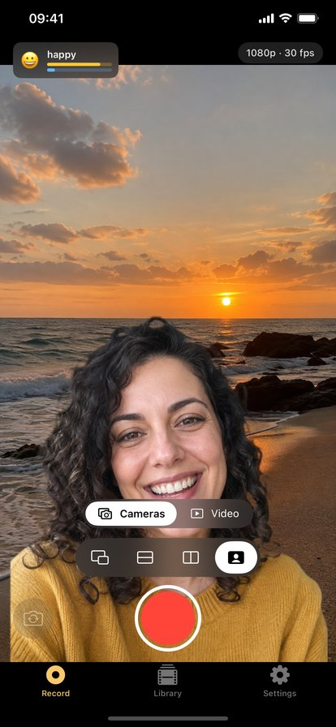
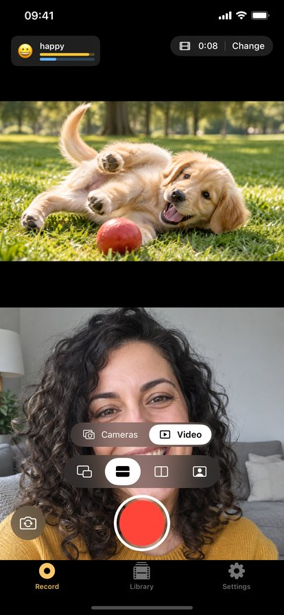
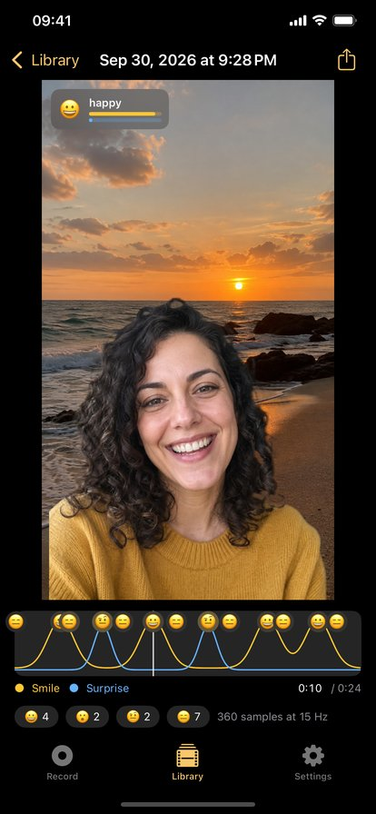

Affectcam
Record the front and back cameras at once, place yourself into the scene, react to videos you already have, and see every smile on a timeline. Everything stays on your iPhone.



Two cameras, one take
Choose picture in picture, a split top and bottom or side by side, or the cutout: the person from the front camera, placed into what the back camera sees. What the preview shows is what gets recorded.
React to a video
Pick a clip from Photos or Files and record yourself next to it or over it. Its sound is mixed into the finished take. Video mode needs only the front camera, so it runs on any supported iPhone. The app never downloads from websites. Only react to videos you have the right to use.
Expression track
While you record, the phone measures smiles, surprise, raised brows, an open jaw and blinks. They are saved next to the video and shown as a timeline you can tap. Export them as JSON or CSV, or draw them into the video.
Free and Pro
- Free: picture in picture and split layouts in both modes, unlimited takes, no watermark.
- Affectcam Pro, one purchase: cutout, the saved expression track and timeline, 4K back camera, export with expressions drawn in, JSON and CSV data.
Privacy
No account, no analytics, no ads, no network code. Privacy policy.